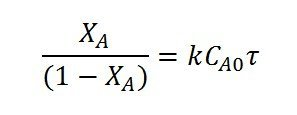
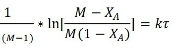

Experiment No.9
Reaction kinetic studies in a plug flow reactor
Background and Theory
Ideal tubular reactor is referred as a plug flow reactor(PFR). PFRs are frequently referred
to as piston flow reactors. The key assumption is that as a plug flows through a tubular reactor , the fluid is perfectly mixed in the radial direction but not in the axial direction (forwards or backwards). Each plug of differential volume is considered as a separate entity, effectively an infinitesimally small batch reactor, limiting to zero volume. As it flows down the tubular PFR, the residence time (
 ) of the plug is a function of its position in the reactor. In the ideal PFR, the
residence time distribution is therefore a Dirac delta function(small and tall) with a value equal
to τ. The PFR model works well for many fluids: liquids, gases, and slurries. An ideal plug flow
reactor has a fixed residence time: Any fluid (plug) that enters the reactor at time t will exit the
reactor at time t + , where τ is the residence time of the reactor.
) of the plug is a function of its position in the reactor. In the ideal PFR, the
residence time distribution is therefore a Dirac delta function(small and tall) with a value equal
to τ. The PFR model works well for many fluids: liquids, gases, and slurries. An ideal plug flow
reactor has a fixed residence time: Any fluid (plug) that enters the reactor at time t will exit the
reactor at time t + , where τ is the residence time of the reactor.Residence time in the reactor is equal to the space time if the conditions in the reactor like pressure and temperature are same as those at the entrance. In the ideal tubular reactor, which is called the “plug flow” reactor, specific assumptions are made about the extent of mixing:
1. no mixing in the axial direction, i.e., the direction of flow
2. complete mixing in the radial direction
3. a uniform velocity profile across the radius.
The absence of longitudinal mixing is the special characteristics of this type of reactor. It is an assumption at the opposite extreme from the complete mixing assumption of the ideal stirred tank reactor. The validity of the assumptions will depend on the geometry of the reactor and the flow conditions. Deviations, which are frequent but not always important, are of two kinds:
1. mixing in longitudinal direction due to vortices and turbulence
2. incomplete mixing in radial direction in laminar flow conditions
Mass Balance
Steady state molar balance over small elemental volume ΔV yields

The conversion, XA, is defined as:
XA = (inlet concentration - outlet concentration) / (inlet concentration)
Volume of a PFR with given influent flow rate and feed composition to achieve a required conversion may be obtained from the above equation, if the rate equation is known. The 3rd term in the above equation may be integrated if the rate equation is known. Rate equation for a given reaction can also be obtained using a PFR. For a single reaction say, A+B->C+D
Assume the rate equation to be
 and a constant density system
and a constant density systemExperiments to be performed with different space times in the reactor with the known ratio of reactant B to A(M) in the inlet. Steady state concentration of A at the reactor outlet may be analyzed for each run.
Now equation A after integration with for M>1 , can be written as

Plotting
vs 
yields a straightline passing through origin if the assumed equation is correct. The slope=k.
For M=1, the performance equation is
So the plot of
yields a straightline passing through origin if the assumed equation is correct. The slope=k.
If the data do not fit by a straight line assume different rate equation and proceed as above.
Note: For theory on conductivity meter, refer the ”Theory Section“ for Batch reactor

Plug Flow Reactor
Aim:
To determine the rate constant for the saponification of ethyl acetate with NaOH
at ambient temperature of 280C using a Plug flow reactor.
CH3COOC2H5 (A)+ NaOH (B)->
CH3COONa + C2H5OH. It is an elementary
reaction
Ethyl acetate is the limiting reaction
Procedure for conducting the experiment:
1) Note down the concentration of ethyl acetate(EA) and NaOH in stock
solution
2) Fill the reservoirs with NaOH and ethyl acetate stock solution
3) Calculate the volume of the tubular reactor.
4) Switch on the pump and allow ethyl acetate to flow into the reactor at
certain flowrate and measure the flowrate(vA) using rotameter.
5) Set the required temperature to be maintained in the reactor.Switch on the
heater to heat the reactor contents to the required temperature .
6) Calculate the flowrate of NaOH(
 ) required to keep the desired value of
) required to keep the desired value of
 ). M may be greater than or equal to one. Calculate the
total flowrate (Q).
). M may be greater than or equal to one. Calculate the
total flowrate (Q).
7) Adjust the flowrate of NaOH to the calculated value, without changing
the EA flowrate.
8) Calculate the actual value of M obtained after adjusting the flowrates.
9) Calculate the space time using the total flow rate.
10) Start the stirrer in the reactor. Close the drain valve completely. Allow
the reaction to proceed till steady state is attained, as indicated by
constant reading in the conductivity meter.
11) Note down the conductivity (in mS/cm) of the reaction mixture in, after
steady state is attained. Note: Some conductivity meters may display
conductance (mS) not the conductivity(mS/cm) [Refer theory for more
information].
12) Determine the concentration of unreacted NaOH in the reaction
mixture by using the conductivity meter calibration equation.
13) Repeat steps (6) to (12) for different EA flowrates .
14) Conduct the experiment at different temperatures
Observations and calculations:
A -> Ethyl acetate
B -> NaOH
Strength of Ethyl acetate in stock solution =  = ------------------------ gmol/L
= ------------------------ gmol/L
Strength of NaOH in stock solution=  = ------------------------ gmol/L
= ------------------------ gmol/L
Diameter of the tube ,d = -----------------------cm
Coil diameter , Dc =
cm
Number of turns= Nt =
V = volume of tubular reactor = ( d2/4)×
Dc Nt =
= -----------------------cm3
V =----------------------- L
Tabular columns:

Calculations:
Calculate the total flow rate Q=  + = LPM
+ = LPM
Calculate the space time , = V/Q = min
Set value of M =

Concentartion of ethyl acetate in the feed mixture,

CAo = --------------------gmol/L
Concentartion of NaOH in the feed mixture,

CBo = --------------------gmol/L
As the conductivity meter calibration is available only at 280C, the conductivity
meter reading obtained at a given temperature of reaction is to be corrected for 280C.
Temperature compensation for conductivity meter

Where ,
YT =conductivity meter reading at any temperature T in mS/cm
Y28 = conductivity meter reading at a temperature of 280C in mS/cm
Obtain Y28 corresponding to measured conductivity meter reading ( YT) using the
equation above.
Conductivity meter is calibrated for concentrations of NaOH in the reaction mixture at a
temperature of 280C.
Obtain the Concentration of NaOH at 280C using the calibration equation given below
Conductivitymeter calibration equation for 280C.

Where,
CB= Concentration of NaOH in the reaction mixture at steady state
Y28 = Conductivity meter reading for solution, corrected for 280C
Concentartion of unreacted NaOH in the reaction mixture at steady state,
CB=
gmol/L (obtained from the conductivity meter calibration
graph)
Concentartion of ethyl acetate in the reaction mixture at steady state,

CA= --------------------gmol/L
Conversion of ethyl acetate,  =
=
(CA/ CAo)=
Performance equation for PFR with rate equation of the form
for M>1 , can be written as
Plotting
 Vs
yields a straightline passing through
origin if the assumed rate equation is correct. The slope=k.
For M=1, the performance equation is
So the plot of
vs
yields a straight line passing through origin. The slope=k.
Graph for M >1
From the graph we get,
Slope = k =..............
L/(g mole. min)
Similarly the experiment may be performed with different temperatures and the
rate constants at these temperatures may be determined.
Obtain the rate constant at three or more different temperatures.

From Arrhenius Equation,
Plot lnk vs 1/T
Determine the activation energy (E) and the frequency factor (ko) from the slope and
intercept of the above plot.
Intercept= lnk0
Slope=-E/R
R is the gas constant
Frequency factor , ko=min-1(litre / gmol)
Activation energy= E=
J/mol
Results:
The rate constant for the saponification of Ethy acetate with NaOH at a temp of
ToC,
k = -------------------------------litre/((mol)(min))
Discuss and conclude on the temperature dependency of rate constant.
The activation energy (E) for the reaction=J/mol
The frequency factor (ko)=
min-1(litre / gmol)


1. The following data are obtained in an ideal tubular flow reactor for the gaseous
pyrolysis of acetone at 5200C and 1 atm. The reaction is CH3.CO.CH3 →
CH2.CO + CH4

The feed consists of pure acetone, and the reactor is a 3.3 cm i.d. pipe of 80 cm length.
Consider that the reaction mixture obeys ideal gas law and reaction follows second-order
kinetics. Find the reaction velocity constant.

- Chemical Reaction Engineering (3rd Edition), Octave Levenspiel, 1999, John Wiley & Sons
- Elements of Chemical Reaction Engineering (4th Edition), H. Scott Fogler, 2005, Prentice Hall
- Chemical Reactor Analysis and Design (2nd Edition), Gilbert F. Froment and Kenneth B. Bischoff, 1990, John Wiley & Sons
- Fundamentals of Chemical Reaction Engineering (1st Edition), Mark E. Davis and Robert J. Davis, 2003, The McGraw-Hill Companies, Inc.
- MIT Open Courseware Lecture notes in Chemical and biological Reaction Engineering.
http://ocw.mit.edu/courses/chemical-engineering/10-37-chemical-and-biological-
reaction-engineering-spring-2007/lecture-notes/lec09_03072007_w.pdf
- Prof. Vidya Shetty K, Department of Chemical Engineering, NITK
- Karthik | Department of Chemical Engineering, NITK
- Amogha V Somayaji | Department of Chemical Engineering, NITK
- Haneena | NITK
- Jaison DSouza B | NITK
- Erin Sheryl Pereira | NITK
- Anusha B Salian | NITK
- Akshaya | NITK